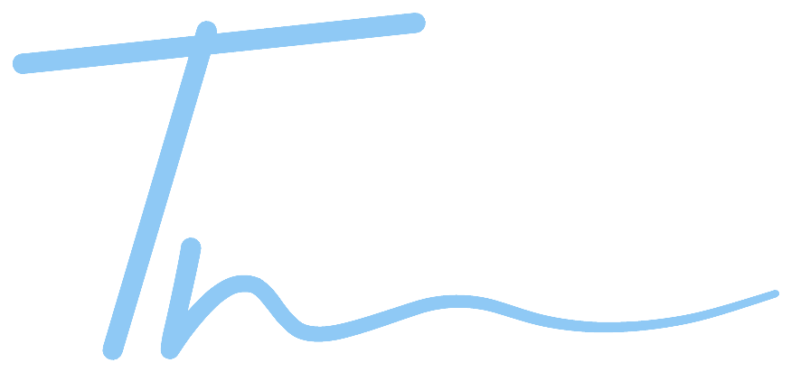
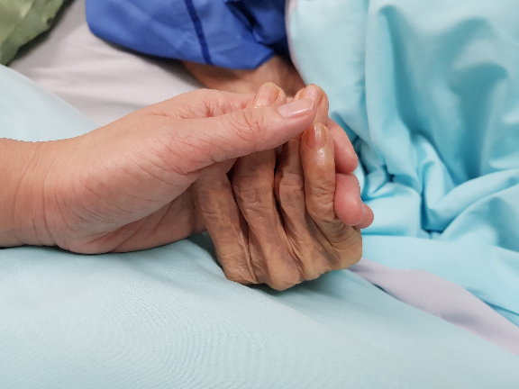
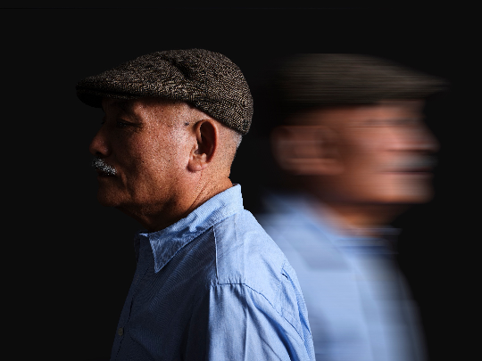
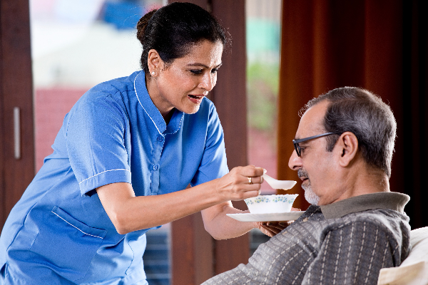
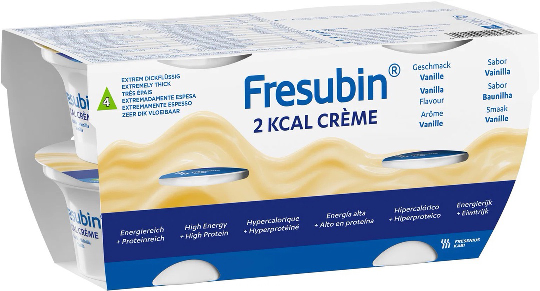

Klinika geriatrie a interní medicíny 1. LF UK a VFN
Paliativní péče
Výživa u pacientů
s demencí
s demencí
Mezi evidencí, etikou a realitou péče
Mgr. Ing. Tereza Vágnerová, Ph.D.

IRámec a etika
02 / 42
Rozhodnutí o podávání či ukončení nutriční podpory nebývá snadné.
Otázka výživy a hydratace v paliativní medicíně je široce diskutována.
Indikace musí být součástí komplexní, holistické péče, realizované multidisciplinárním týmem.
IRámec a etika
03 / 42
Nutriční podporu indikujeme včas a jen tam, kde přináší prokazatelný benefit.
Hodnocení stavu výživy
Při poskytování paliativní péče je nutné věnovat zvláštní pozornost hodnocení stavu výživy pacienta a včas indikovat nutriční podporu v situaci, kdy pacientovi přináší prokazatelný benefit.
Reálné cíle
Zároveň je nezbytné, aby cíle intervence byly reálné.
IRámec a etika
04 / 42
Doporučení pro výživu a hydrataci u demence ESPEN aktualizoval v roce 2024.
40doporučení v tomto postupu
7 na úrovni organizace, která péči poskytuje
33 na úrovni jednotlivého klienta
Volkert D, et al. Clin Nutr 2024;43(6):1599–1626
Stupně doporučení
Ametaanalýza, systematický přehled či RCT přímo aplikovatelné na populaci
Bkonzistentní studie nižší úrovně nebo extrapolace
0úroveň 3–4 nebo extrapolace
GPPkonsenzus expertů. Pro tuto oblast většina doporučení, protože kvalitní studie chybí
To, že je doporučení GPP, neznamená, že je téma méně důležité.
IRámec a etika
05 / 42
Cíle péče následují hlavní etické principy. Platí i pro indikaci nutriční podpory.
01
Autonomie
02
Činit dobro
03
Neškodit
04
Rozhodovat spravedlivě
Vienna Declaration 2022 · nutriční péče jako lidské právo
IRámec a etika
06 / 42
Cíl intervence musí být konkrétní, měřitelný a časově ohraničený.
01
konkrétní
02
měřitelné
03
dosažitelné
realistické
04
časově ohraničené
revidovatelné
05
v souladu s přáním pacienta či blízkých
IRámec a etika
07 / 42
Adekvátně informovaný pacient má právo léčbu odmítnout.
I když by odmítnutí poskytované péče vedlo ke smrti. Včetně nutriční péče.
IIHodnocení výživy
08 / 42
Nutriční stav je významný prognostický faktor v době diagnózy i v průběhu onemocnění.
Malnutrice, ve smyslu podvýživy i obezity, stejně jako přidružené nutriční poruchy (sarkopenie, křehkost, onemocněním či orgánově specifická kachexie) ovlivňují délku dožití, účinnost léčby, funkční stav i kvalitu života nemocného.
IIHodnocení výživy
09 / 42
Předběžné plánování péče mění průběh posledních let života.
75%
zbytečných hospitalizací
bez předem stanovených směrnic
bez předem stanovených směrnic
Hrubé seznámení s průběhem onemocnění a možnými komplikacemi (např. u m. Alzheimer) je spojeno s plynulejším průběhem, méně agresivními zákroky v posledních 3 letech života a celkově lepší kvalitou života.
Naopak absence směrnic u dementních pacientů zvyšuje počet hospitalizací a invazivních výkonů, je pro pacienty traumatizující a z velké části nenaplňuje předpokládané cíle (komfort).
Progrese malnutrice je v pokročilejším stádiu onemocnění charakteristický znak.
IIHodnocení výživy
10 / 42
Stresová malnutrice a kachexie nejsou totéž.
Akutní
Stresová malnutrice
Rozlišujeme akutní či chronické projevy malnutrice. Zaměřujeme se na výchozí funkční, kognitivní a celkové zdravotní parametry nemocného. Bereme v potaz sociální, resp. rodinnou situaci.
Věk je významný prognostický faktor, který je třeba pečlivě posuzovat.
Chronická
Kachexie
Velmi častá u pokročilých stádií onemocnění (rakovina, nemoci ledvin, demence, srdeční selhání). Komplexní problém, není řešitelná pouze „jezením více jídla“.
Významný nekontrolovatelný úbytek na hmotnosti napovídá end-of-life situaci.
IIHodnocení výživy
11 / 42
Nutriční terapii podáváme jen tehdy, projde-li rozhodnutí všemi šesti otázkami.
01Screening rizika malnutrice
Ne
02Bylo riziko zjištěno?
Ne
03Malnutrice potvrzena podle GLIM?
Ne
04Je medicínská indikace?
Ne
05Je cíl dosažitelný?
Ne
06Známe přání pacienta?
Ne
Rescreening za 7–10 dní
Komfortní krmení a paliativní péče
AnoPodání nutriční terapie
Podle algoritmu rozhodování v klinické výživě · citaci zdroje doplnit

IIIKazuistiky
12 / 42
Pacient s těžkou demencí
Dva příběhy z rezidenční péče a otázky, které před pečující kladou.

IIIKazuistiky
13 / 42
Je pro pana Jaroslava optimálním způsobem „comfort feeding“?
Pan Jaroslav, 88letý klient žijící v DZR s dg. m. Alzheimer ve stádiu pokročilé demence, s poruchou polykání (často absentující nebo závažně opožděný polykací reflex, drooling). Podávána MUS a zahuštěné tekutiny, příjem stravy 0–25 % kvůli obtížím. Manželka je přítomná při obědě a akcentuje obavy o jeho hmotnost.
Věk
88
Prostředí
DZR
Příjem stravy
0–25 %
Strava
MUS, zahuštěné tekutiny
IIIKazuistiky
14 / 42
Pro koho paní Jaroslava jí?
Paní Jaroslava je klientka s těžkou demencí institucionalizovaná ve Vašem zařízení.
Dcera trvá na krmení bez ohledu na to, že paní Jaroslava stravu opakovaně odmítá a má velmi malou chuť k jídlu.
IIIKazuistiky
15 / 42
Demence postupně zhoršuje paměť, myšlení, jazyk, plánování i osobnost.
Nejčastější příčinou je Alzheimerova choroba. Onemocnění je progresivní a obvykle se v horizontu několika let u většiny lidí rozvinou problémy se žvýkáním a polykáním.
problémy s pamětí
problémy s myšlením a plánováním
problémy s vyjadřováním
neschopnost rozpoznávat lidi či věci
změna osobnosti
Tělo se postupně zpomaluje, jeho nároky se mění.
potíže s polykáním některých druhů potravin
nemusí cítit hlad, přestávají jíst a pít (i bez dysfagie)
zapomínají jíst či jak jíst
usínají u jídla
zvýšená námaha při jídle, nutná asistence
Změny v příjmu stravy, polykání a funkčním stavu napovídají přirozené deterioraci.
IIIKazuistiky
16 / 42
Kdy je třeba se o výběr jídla či jiné formy výživy zajímat?
Pacient s poruchou polykání může nechtěně vdechnout jídlo či pití do plic. Tomu se říká aspirace a může způsobit zápal plic. Porucha polykání je způsobena neschopností kontrolovat svaly hrdla. Dále je vhodné si všímat:
úbytku na hmotnosti
kašle či sípání během jídla a pití
vytékání jídla či pití z úst
částí sousta v ústní dutině i po polknutí
dlouhé doby strávené jídlem
nejistoty, zda je pacient hladový či žíznivý
U pacientů s demencí si nikdy nejste jisti, zda cítí hlad či žízeň. Pacienti s velmi těžkou formou demence toto referují pouze zřídka.
Možnost A
Úprava konzistence stravy a tekutin, asistence u jídla a pití
Možnost B
Živení pomocí vyživovací sondy či stomie (vývodu)
Bezpečnou konzistenci nechte otestovat klinickým logopedem. Texturu upravujte tak zřídka, jak je možné.
Doporučení 26 · GPP · 94 %
IVKonec života
17 / 42
Nároky klientů v rezidenční péči se mění s blížícím se koncem života.
Pokud klient přestává jíst, netrpí.
Neumírá hlady.
Neumírá hlady.
Doporučení 35 · GPP · 96 %
IVKonec života
18 / 42
Hlad a žízeň jsou na konci života spontánně tlumeny.
Je to součást metabolických změn. Tím tělo zajišťuje, že hladovění není bolestivé. U zdravého hladovějícího člověka to neplatí stejně.
Hladovění skrze specifické metabolické dráhy aktivuje produkci ketolátek, které indukují pocity sytosti.
Zvyšuje se produkce endogenních opioidů (např. β-endorfin, enkefaliny), které mohou být významně potentnější než morfin. Tím je zajištěna relaxace a úleva od bolesti.
Přesněji
ketolátky: anorektický efekt, možný mírně sedativní či euforický centrální efekt
metabolická acidóza a hypernatremie: mírná otupělost vědomí
akumulace endogenních opioidů
snížená sekrece u dehydratace: méně dušnosti, méně nauzey
uremie a další metabolity v terminálním stadiu
IVKonec života
19 / 42
Žízeň na konci života tlumíme ústy, ne infuzí.
Pocit hladu u umírajícího klienta obvykle není přítomen. Je-li strava nabídnuta, přijme velmi malé množství.
Hlavním diskomfortem je žízeň, a tu lze uspokojivě zvládnout popíjením po malých dávkách, kousky ledu, tvrdým bonbonem a dobrou péčí o dutinu ústní.
Mezi pocitem žízně v terminální fázi a skutečným příjmem tekutin je jen malá souvislost, a to i při podání nitrožilně.
Když je hydratace indikována
Parenterální tekutiny lze podat dočasně, k překlenutí krizové situace
U mírné a střední dehydratace preferujeme podkožní cestu (hypodermoklýza), zvlášť může-li klient zůstat v zařízení
Roztoky izotonické, do 3 000 ml/den a 1 500 ml na jedno místo vpichu. Ve většině případů nepřekročí 1 000 ml
U těžké dehydratace a větších objemů nitrožilní cesta
Doporučení 39 · GPP · 100 % konsenzus
IVKonec života
20 / 42
Jak bude vypadat, když zvolím úpravu konzistence a asistované krmení?
Vysvětlení možností úpravy stravy a tekutin (kdo o ni rozhoduje), popsání principu asistovaného krmení, rizik (vyšší riziko aspirace) i benefitů spojených s krmením (socializace, péče ze strany rodiny), popř. postupu krmení ve zdravotnickém či sociálním zařízení.
Klient bude živen, dokud a pokud mu krmení nezpůsobuje stres. Jen tolik, kolik sám chce. Hmatatelná alternativa k sondové výživě.
Otázky, které přijdou
Mohou být všichni pacienti s demencí asistovaně krmeni?
Jak funkční asistované krmení je?
Co se stane, pokud můj příbuzný nebude schopen nic ústy sníst?
Co mohu udělat, abych pomohl, když nebude moci jíst či pít?
Doporučení 16 · GPP · 100 %
IVKonec života
21 / 42
Zavřete oči. Máte pokročilou demenci a nemůžete říct, že nechcete jíst.
Co uděláte, když se Vás někdo bude snažit nakrmit?

IVKonec života
22 / 42
Plivu. Odvracím hlavu. Pevně zavírám ústa. Bráním se ruce s příborem. Zlobím se. Křičím. Chci odejít z místnosti. Odstrkuji talíř. Tvářím se útrpně, bolestivě…
IVKonec života
23 / 42
Nepřijímání stravy se stává významným zdrojem úzkosti všech osob zapojených do péče.
Snížený příjem stravy neakceleruje smrt klienta.
VRozhodování
24 / 42
Snížený příjem stravy je pouze symptom. K úmrtí vede onemocnění samo.
Nutnost informací
Lidé s pokročilou demencí se blíží ke konci života. Sledovat je a jejich nemoc může být těžké pro každého, kdo se o ně stará.
Důležité je znát, co si přeje (by si přál) pacient a poté jeho příbuzní. Tyto informace jsou klíčové při dalším rozhodování o péči.
Rodina je často ve větší úzkosti z nízkého příjmu stravy než samotný klient.
Pro příbuzné může být velmi stresující a bolestivé vidět svého blízkého odmítat stravu či pití.
Strava i pití je spojováno s „životní sílou“ a je silným socializačním prostředkem. Je těžké přijmout, že osoba blízká „přirozeně“ přestane jíst.
Zvažujeme více aspektů: dříve vyslovená přání, náboženské a kulturní hodnoty, co jídlo pro danou osobu představovalo, blízkost druhé osoby a samotná péče, trávení času.
Pečlivé zvážení pro a proti individuálně v závislosti na pacientovi.
VRozhodování
25 / 42
Když příbor přestane fungovat, nabídneme jídlo do ruky.
Klientům s demencí a malnutricí či dehydratací nebo jejich rizikem často nabízíme nápoje, svačiny a jídlo do ruky, abychom příjem usnadnili.
Přímá evidence je velmi omezená. Doporučení stojí na tom, že náklady jsou minimální, riziko újmy žádné a možný přínos reálný. V jedné studii se u deseti z dvanácti klientů zastavil úbytek hmotnosti a zlepšila se samostatnost při jídle.
Doporučení 19 · GPP · 100 %
Co se osvědčuje
Kousky ovoce a zeleniny, které drží formu: jahody, mandarinka, okurka, vařená brambora
Vejce na tvrdo, kousky sýra, malé sendviče a wrapy
Muffin, tvarohový či ovesný pruh, energetická tyčinka
Dostupná svačina i mimo jídelní dobu a delší čas na jídlo
Pozor na dysfagii. Jídlo do ruky nenahrazuje bezpečnou konzistenci.

VRozhodování
26 / 42
Upravená konzistence nemusí vypadat jako rozmixovaná strava.
Tvarovaná strava zachovává podobu původní potraviny, a tím i její rozpoznatelnost, chuť k jídlu a důstojnost jídla jako události.
Modifikovaná strava bývá spojena s nižším příjmem energie i tekutin, proto ji obohacujeme a klienta klinicky sledujeme. Upravujeme tak, jak je nutné pro bezpečné polknutí, ale tak zřídka, jak je možné.
Doporučení 26 · GPP · 94 %

VRozhodování
27 / 42
Intervence v jeden moment přestanou být efektivní.
Ale
Pokud je pro klienta suplementace bezpečná, užívá si jí (byť malé množství), je na ni zvyklý, preferuje ji více než stravu a poskytuje alespoň minimální komfort pro rodinu, nevysazujeme ji automaticky.
VRozhodování
28 / 42
Sipping má nejsilnější evidenci v celém doporučení. Pro výživu, ne pro kognici.
Klientům s demencí a malnutricí či jejím rizikem má být nabídnut sipping, aby se zvýšil příjem energie a bílkovin a udržel se stav výživy.
Stupeň A · 100 % konsenzus
Sipping se nemá používat k úpravě kognitivního deficitu ani k prevenci dalšího kognitivního a funkčního poklesu.
Stupeň B · 100 % konsenzus
Co se nedoporučuje
Aomega-3 k úpravě kognice
Bsipping určený speciálně pro demenci, ketogenní intervence, probiotika
GPPléky stimulující apetit (89 %), alkohol a bylinné přípravky (87 %), mikronutrienty bez prokázaného deficitu (100 %)
GPPrutinní zvýrazňovače chuti (73 % konsenzus, tedy jen většinová shoda)
Restrikce ve stravě, které omezují příjem, jsou u demence potenciálně škodlivé a mají se vynechat.
VRozhodování
29 / 42
Jak bude vypadat, když bude zvolena sonda či stomie?
Vysvětlení principu zavedení, funkčnosti systému, podávání výživy a péče o výživový vstup.
peg.freseniuskabiforum.eu
Enterální výživa se u těžké demence nezavádí. Zavedení v pokročilém stadiu má být velmi vzácnou výjimkou, které vždy předchází etická konzultace.
Doporučení 37 · GPP · 100 %
Otázky, které přijdou
Musí být pacient upoutaný na lůžko po celý den?
Dá se sonda či stomie odstranit?
Bude můj příbuzný žít déle, pokud se rozhodnu pro tento způsob živení?
Bude mít se sondou či stomií menší pravděpodobnost, že bude aspirovat?
VRozhodování
30 / 42
Je zavádění NGS či PEG na místě?
Úmrtnost po zavedení PEG zdroj doplnit
10–43%30denní úmrtnost
60–65%v následujících 12–18 měsících
73–81%déle než 36–48 měsíců
Benefity
Přístup pro hydrataci a medikaci (snížení bolesti pomocí vstupu).
Rizika
v případě přežití alespoň 60 dní u 70 % nezaznamenáno žádné funkční zlepšení
vyšší zátěž pro pečovatele a rodinu
zvýšené riziko dekubitů, pneumonie a dalších komplikací
pneumonie OR 3,56 a dekubity OR 2,25 proti klientům bez sondy, bez rozdílu v přežití či stavu výživy Lee 2021
u 36 492 klientů s pokročilou demencí nenalezen rozdíl v přežití Teno 2012
VRozhodování
31 / 42
Co by si přál Váš příbuzný, kdyby mohl volit sám?
Sdělil Vám příbuzný někdy svá přání ohledně léčby pro případ vážné nemoci?
Má závěť, nebo vyslovil přání či preference ohledně umělé výživy?
Jaké jsou jeho přesvědčení a hodnoty ohledně péče při závažné a nevyléčitelné nemoci?
Kdyby se mohl podívat na výhody a nevýhody, co by si přál nebo vybral?
A konečně, co je podle Vás v jeho nejlepším zájmu?
Očekává lékař či specialista, že se příčina problémů s jídlem a pitím zlepší?
Jak je pravděpodobné, že se příbuzný s demencí rozruší kvůli „hadičce“ a bude potřebovat omezovací prostředky nebo uklidňující léky?
Bude se sondou či stomií limitován v péči?
Má jiné onemocnění, které ovlivňuje rozhodnutí?
Zdá se, že preferuje příjem potravy ústy?
VRozhodování
32 / 42
Empatie je v komunikaci nezbytná.
Cítíte se pod tlakem ostatních?
Cítíte se rozpolceni mezi vlastním přesvědčením a přesvědčením pacienta?
Máte nezodpovězené otázky a potřebujete více informací, než se rozhodnete?
Jaký je Váš celkový pocit ze správné volby?
Rozhodující osoba by měla vědět, že může sdílet své obavy a pocity, může se informovat i své rozhodnutí v čase změnit. Měla by znát veškerá rizika i benefity obou možností a zůstat v plném zapojení plánu péče.
VRozhodování
33 / 42
„Nenašli jsme žádné důkazy o tom, že by živení sondou či stomií zlepšovalo přežití, zlepšovalo kvalitu života, snižovalo bolest, snižovalo úmrtnost, snižovalo behaviorální a psychologické příznaky demence, vedlo k lepší výživě, zlepšovalo psychologické symptomy rodiny nebo pečovatelů, jako jsou deprese, úzkost, zátěž pečovatelů nebo spokojenost s péčí, a žádné náznaky škodlivosti. Našli jsme určité důkazy o tom, že existuje klinicky významné riziko vzniku dekubitů při enterálním živení. Budoucí výzkum by se měl zaměřit na hodnotnější výzkum a porovnávání kontrolních a intervenčních skupin a na jasně definované intervence a měření všech zde uvedených výsledků.“
Davies N, Barrado-Martín Y, Vickerstaff V, et al. Enteral tube feeding for people with severe dementia. Cochrane Database Syst Rev 2021;8:CD013503. Zdroj ověřit před přednáškou.
VRozhodování
34 / 42
Jak budeme postupovat u pana Jaroslava v péči?
01Informujeme ošetřujícího lékaře o stávající situaci.
02Zavoláme zákonnému zástupci a vysvětlíme, co se v příjmu stravy u klienta změnilo.
03Vysvětlíme, že změny v příjmu stravy napovídají progresi demence a jsou očekávané.
04Vysvětlíme rodině i pečujícím zdravotníkům koncept „comfort feeding“.
05Ujistíme se, že rodina i pečující chápou, že tento koncept nezajistí nutriční nároky (energetické ani v příjmu makro- a mikronutrientů).
06Odpovíme rodině na otázky, které mají.
07Nabídneme jim možnost informování o změně hmotnosti.
08Informujeme pečující tým, že EOL lze očekávat v blízké budoucnosti.
VRozhodování
35 / 42
Sedm ze čtyřiceti doporučení nemíří na jednotlivce, ale na zařízení.
Písemně zpracovaná koncepce nutriční péče, v souladu s filozofií organizace
Standardní operační postupy, které přidělují odpovědnost za nutriční péči konkrétním rolím
Dostatek kvalifikovaného personálu, včetně času na asistenci u jídla a na doprovod na toaletu
Funkční jídelna s atmosférou, která k jídlu a pití vybízí
Přitažlivé jídlo a tekutiny s možností volby, včetně svačin a nápojů
Vzdělávání zdravotnických pracovníků v nutriční péči
Nabídka vzdělávání i neformálním pečujícím, tedy rodině
GPP · 100 %Vzdělávání · stupeň B
VRozhodování
36 / 42
Na konec něco k nahlédnutí
A Man on the Inside
Komediální série o životě v rezidenčním zařízení. Užitečná jako obraz toho, jak prostředí, vztahy a všední den vypadají očima klienta, ne systému.
VRozhodování
37 / 42
Rozhodování o výživě vyžaduje transdisciplinární přístup.
Základní principy musí vždy zůstat zachovány.
Autonomie · Činit dobro · Neškodit · Rozhodovat spravedlivě
Děkuji za pozornost.
Mgr. Ing. Tereza Vágnerová, Ph.D. · tereza.vagnerova@lf1.cuni.cz
Mgr. Ing. Tereza Vágnerová, Ph.D. · tereza.vagnerova@lf1.cuni.cz
VIPříloha
38 / 42
Přednáška stojí na osmi doporučených postupech ESPEN.
Výživa a hydratace u demence, aktualizace 2024
Volkert D, et al. Clin Nutr 2024;43(6):1599–1626
Klinická výživa a hydratace v geriatrii
Volkert D, et al. Clin Nutr 2019;38:10–47
Praktické doporučení: klinická výživa a hydratace v geriatrii
Volkert D, et al. Clin Nutr 2022;41:958–989
Klinická výživa v neurologii, včetně dysfagie
Burgos R, et al. Clin Nutr 2018;37:354–396
Etické aspekty nutriční terapie
Cardenas D, et al. Clin Nutr 2026;60:106622
Nutriční péče v nemocnici
Thibault R, et al. Clin Nutr 2021;40:5684–5709
Mikronutrienty
Berger MM, et al. Clin Nutr 2022;41:1357–1424
Definice a terminologie klinické výživy
Cederholm T, et al. Clin Nutr 2017;36:149–164
Kritéria GLIM: Cederholm T, et al. Clin Nutr 2019;38:1–9 · úplný katalog ESPEN na následujících třech stranách
VIPříloha
39 / 42
Katalog ESPEN má dvacet jedna doporučených postupů. Sedm platí napříč péčí.
Etické aspekty nutriční terapie
Cardenas D, et al. Clin Nutr 2026;60:106622
Definice a terminologie klinické výživy
Cederholm T, et al. Clin Nutr 2017;36:149–164
Mikronutrienty
Berger MM, et al. Clin Nutr 2022;41:1357–1424
Nutriční péče v nemocnici
Thibault R, et al. Clin Nutr 2021;40:5684–5709
Domácí enterální výživa
Bischoff SC, et al. Clin Nutr 2020;39:5–22
Domácí parenterální výživa
Pironi L, et al. Clin Nutr 2020;39:1645–1666
Nutriční podpora u polymorbidních hospitalizovaných, aktualizace 2023
Wunderle C, et al. Clin Nutr 2023;42:1545–1568
Stav k 30. 8. 2026 · espen.org/guidelines · praktické verze a position papers vycházejí zvlášť
VIPříloha
40 / 42
Sedm postupů míří na věk, neurologii, intenzivní a chirurgickou péči.
Výživa a hydratace u demence, aktualizace 2024
Volkert D, et al. Clin Nutr 2024;43:1599–1626
Klinická výživa a hydratace v geriatrii
Volkert D, et al. Clin Nutr 2019;38:10–47
Klinická výživa v neurologii
Burgos R, et al. Clin Nutr 2018;37:354–396
Klinická výživa na jednotce intenzivní péče
Singer P, et al. Clin Nutr 2019;38:48–79
Klinická výživa v chirurgii, aktualizace 2025
Weimann A, et al. Clin Nutr 2025;53:222–261
Parenterální výživa u dětí, společně s ESPGHAN, ESPR a CSPEN
Clin Nutr 2018;37:2306–2459
Nutriční péče u cystické fibrózy, aktualizace 2024, s ESPGHAN a ECFS
Wilschanski M, et al. Clin Nutr 2024;43:413–445
VIPříloha
41 / 42
Sedm postupů míří na jednotlivá onemocnění.
Výživa u onkologických pacientů
Arends J, et al. Clin Nutr 2017;36:11–48
Nespecifické střevní zánětlivé onemocnění, aktualizace 2023
Bischoff SC, et al. Clin Nutr 2023;42:352–379
Chronické intestinální selhání u dospělých, aktualizace 2023
Pironi L, et al. Clin Nutr 2023;42:1940–2021
Onemocnění jater
Plauth M, et al. Clin Nutr 2019;38:485–521
Akutní a chronická pankreatitida
Arvanitakis M, et al. Clin Nutr 2020;39:612–631
Akutní a chronické onemocnění ledvin u hospitalizovaných
Fiaccadori E, et al. Clin Nutr 2021;40:1644–1668
Obezita u gastrointestinálních a jaterních onemocnění, s UEG
Bischoff SC, et al. Clin Nutr 2022;41:2364–2405
VIPříloha
42 / 42
EFAD nevydává klinická doporučení pro paliativní péči. Vydává stanoviska k roli nutričního terapeuta.
ESDN Older Adults: Role of the Dietitian in the Prevention and Management of Nutrition-related Disorders in Older Adults
Stanovisko, 2017
Briefing paper k roli nutričního terapeuta u starších dospělých
EFAD briefing papers
EASO a EFAD: dietetická léčba nadváhy a obezity u dospělých
2025 · podrobnou citaci doplnit
Stanovisko ESDN Older Adults výslovně uvádí, že nutriční terapeut si má být vědom etických aspektů nutriční péče o starší dospělé.
Zdroje sítě ESDN Older Adults odkazují v otázce demence na doporučení ESPEN. Klinickou oporu tedy hledáme tam.
efad.org · EFAD spolupracuje s iniciativou ONCA, Optimal Nutritional Care for All